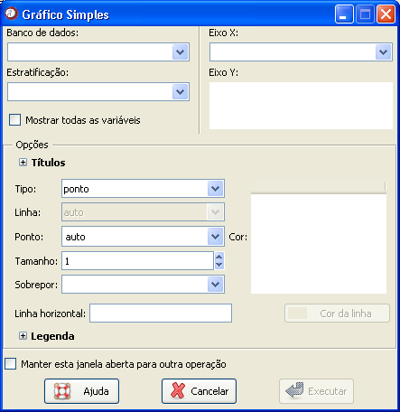

Gráfico
simples
Gráfico
simples
Além disso, na presença de uma variável de estratificação, o gráfico poderá mostrar relações de tendência entre a variável e os grupos.
O caminho para acessar essa janela é: Gráficos

Figura 1. Janela "Gráfico simples".
Figura 1. Janela "Gráfico simples".
O primeiro passo é selecionar o banco de dados onde está a variável de interesse. Para isso, é necessário que o banco já tenha sido aberto (detalhes sobre como abrir dados ou importar dados via ODBC).
Em seguida, todas as variáveis aparecerão disponíveis no campo "Eixo Y". Uma ou mais variáveis deverão ser selecionadas.
Um item opcional da janela é a variável de estratificação. Quando o banco de dados é selecionado, as variáveis identificadas como fatores aparecerão na guia "Estratificação". Se a variável de estratificação não estiver listada nesse campo, basta habilitar a opção "Mostrar todas as variáveis". É permitida a escolha de apenas uma variável para esse caso.
O próximo passo é escolher a variável para o "Eixo X". Por ser um gráfico que representa a idéia de continuidade, as variáveis mais indicadas para essa categoria são índices de tempo ou do banco de dados. É importante lembrar que sem a especificação do Eixo X, o gráfico não será concluído.
Os campos seguintes são opcionais. As informações sobre cada campo seguem abaixo:
Opções de títulos
As opções de "Título", "Subtítulo", "Rótulo X" e "Rótulo Y" não aparecem na janela automaticamente. Para preenche-las, clique primeiro em Títulos.
Os nomes dos rótulos devem se referir às variáveis que foram selecionadas para o eixo correspondente.
Tracejados do gráfico
Tipo: tipo de gráfico, que pode ser ponto, linha, ponto e linha, histograma e degrau. O gráfico do tipo degrau deve ser mais utilizado quando se deseja observar uma função acumulada.
Linha: Para gráficos de linha, é possível especificar o tipo de linha, como sólida, tracejada ou pontilhada.
Ponto: Para essa versão, essa opçõa ainda não está disponível mas seu objetivo será a escolha de diferentes tipos de pontos.
Tamanho: Se refere a espessura da linha ou ao tamanho do ponto, dependendo do tipo de gráfico. Pode variar entre 1 e 10.
Sobrepor: Essa opção deve ser utilizada quando mais de uma variável tiver sido selecionada para a construção do gráfico. Para criar dois ou mais gráficos diferentes, dentro da mesma janela, clique em "Nenhum". Se desejar sobrepor as variáveis em um mesmo gráfico, clique em "Variáveis".
Linha horizontal: Adiciona uma linha horizontal no gráfico. Em geral, é usada quando se deseja as informações do gráfico com um determinado valor. Para isso, basta digitar o valor nesse campo.
Cor da linha: Se refere a cor da linha horizontal que pode ser adicionada. A cor padrão é sempre preta, podendo ser alterada pelo usuário. Para isso, basta dar um duplo clique na linha e selecionar a cor desejada.
Cor: Indica a cor do gráfico, em código RGB. Para alterar a cor de um gráfico, não é necessário saber o código da cor. Basta dar um duplo clique na cor que uma janela será aberta com a aquarela. Nessa janela, selecione a cor desejada e clique em ok.
Opções de legenda
Se desejar incluir uma legenda ao gráfico, habilite a caixa "Legenda". Novamente, essas opções não aparecem automaticamente. Para preenche-las, clique primeiro em Legenda.
Para legendas na horizontal, habilite a caixa "Horizontal". Se desejar legendas na vertical, não é necessário marcar por ser o default do aplicativo.
A opção "posição" deve ser preenchida com a localização da legenda no gráfico.
Depois de selecionar todas as opções desejadas, basta clicar em "Executar". Para construir sucessivos gráficos usando essa janela, marque a opção "Manter essa janela aberta para outra operação". Com isso, o resultado desejado aparecerá na janela de gráficos do Epi-R, mas a janela atual não será fechada, evitando o retrabalho de acessá-la.